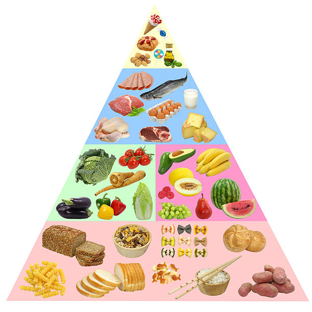

Introduction to nutrition
Why is nutrition important?
Nutrition is a critical part of health and development. Better nutrition is related to improved infant, child and maternal health, stronger immune systems, safer pregnancy and childbirth, lower risk of non-communicable diseases (such as diabetes and cardiovascular disease), and longevity.
There are five main food groups that should be a part of your daily diet:
- Fats, spreads and oils
- Meat, poultry, eggs, fish, beans and nuts
- Dairy products
- Breads and cereals
- Vegetables and fruit
These five food groups can be put into a 'Food Pyramid', which gives us a better understanding on what we should be eating.
The interactive food pyramid below will give you more information about each food group on it. Just simply click on the group you want to learn about and it wll redirect you to that page.
